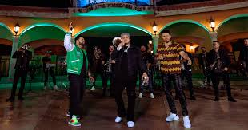
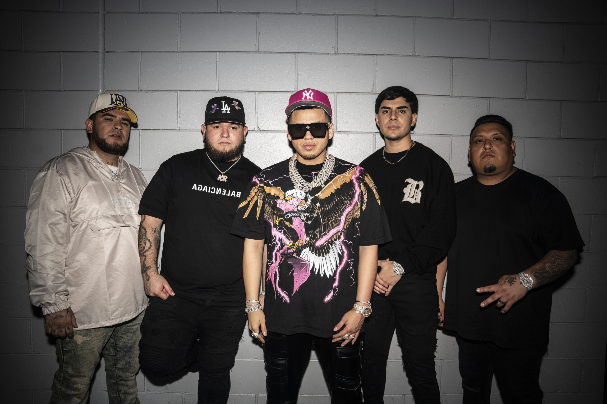
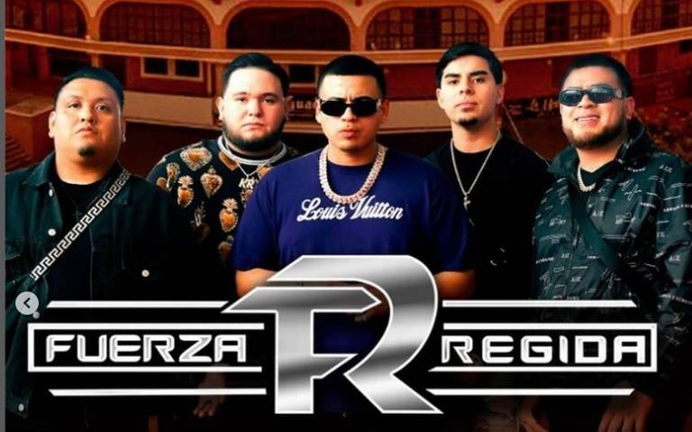

¡Bienvenidos al mundo de las bandas y los corridos!
Si eres de los que disfrutan el sonido auténtico y poderoso de las bandas, los corridos y todo lo que suena a México, entonces estás en el lugar correcto. Las bandas y los corridos son parte fundamental de nuestra cultura, pero no solo eso, ¡también reflejan nuestra historia, nuestras costumbres, y claro, el ritmo que nos late en el corazón! 🥁💖, a continuacion una hora de canciones de la banda los tigres del norte
 precioname si quieres escuchar a los tigres del norte
precioname si quieres escuchar a los tigres del norte
¿Qué son las Bandas?
Las bandas de música mexicana son una agrupación de músicos que, en su mayoría, tocan instrumentos de viento (como trompetas, trombones, y tubas) y de percusión (como el tambor y el bombo). Aunque a veces también se les suma el acordeón o la guitarra eléctrica, lo que realmente les da esa energía única es la combinación de metales y percusión, creando un sonido explosivo que hace que todos se paren a bailar. 💃🕺
 ¿quieres escuchar chiquilla de fuerza regida x banda ms?subgeneros
1. Banda Tradicional 🎺 La clásica banda sinaloense, esa que te hace sentir que estás en un pueblo mexicano con sus tonos alegres y enérgicos. Este subgénero es conocido por sus arrangements llenos de metales brillantes y percusión que invitan a moverse. Las letras suelen hablar de amor, desamor, o historias de la vida cotidiana. Algunas de las bandas más representativas de este estilo son Banda El Recodo y Banda MS. 🎶 Canción recomendada: “El Sinaloense” – Banda El Recodo. cancion que puedes escuchar en el siguiente enlace
el sinaloense2. Banda de Durango 🎸 Este estilo se caracteriza por un sonido un poco más suave que la banda sinaloense. Las melodías son más melódicas y sus letras cuentan historias sobre la vida de los habitantes de Durango, y de cómo enfrentan la vida. Son perfectas para aquellos que buscan un balance entre la música alegre y la narrativa profunda. Canción recomendada: “El Toro Mambo” – Banda Machos.
el toro mambolos corridos tumbados
3. Corrido Tumbado 🎤 Este subgénero ha ganado mucha popularidad en los últimos años, especialmente entre la juventud. Fuerza Regida es la banda más conocida dentro de este estilo. Combina el tradicional corrido, pero con una mezcla de trap, hip-hop, y reggaetón. Es una fusión explosiva, donde los temas pueden ir desde la vida de los narcotraficantes hasta historias de amor o de superación personal.
¡LOS ARTISTAS ACTUALES DE CORRIDOS TUMBADOS Y SUS CANCIONES MAS POPULARES!
Natanael Cano nació en Hermosillo, Sonora, y es conocido como uno de los pioneros de los corridos tumbados. Desde joven, combinó los tradicionales corridos mexicanos con el trap, creando un estilo único que le dio mucho éxito. 🏆🎶 Sus canciones cuentan historias de la vida real, amor, desamor y su propia experiencia en el mundo. ¡Es el "vaquero moderno" que está rompiendo fronteras! 🤠💥 una de sus canciones mas conocidas es soy el diablo
soy el diablo amor tumbado exitosJunior H 🎸🌵💔
Junior H nació en Guanajuato y creció en California. Desde pequeño, estuvo rodeado de música y, con el tiempo, su estilo evolucionó hacia los corridos tumbados. 🎶🌎 Sus canciones se caracterizan por un sonido tranquilo y melódico, pero con letras profundas que abordan el amor, las dificultades y la vida cotidiana. Es un artista que toca el corazón de sus fans con su autenticidad. 💖🎤
 y lloro
piensalo
tu boda
y lloro
piensalo
tu boda
FUERZA REGIDA 💥🎤🌟 Fuerza Regida es un grupo originario de San Bernardino, California, conocido por su estilo único que mezcla los corridos tumbados con reggaetón y trap. 🎧🎶 Su música es energética, dinámica y, a menudo, aborda temas de la vida en la calle, el desamor y la superación personal. ¡Son una de las bandas más populares del género y están conquistando el mundo! 🌍🔥
 sabor fresa harley quinn excesos. ovi 🌴🎶💫 Ovi, originario de Puerto Rico, es otro de los grandes exponentes de los corridos tumbados. Comenzó en el mundo del trap y, al ver el potencial de los corridos, fusionó los dos géneros con letras que hablan de experiencias personales y la vida en la calle. 🏙️🎤 Su estilo fresco y su flow único lo han convertido en una figura importante dentro del movimiento. ¡Está dejando huella con su música! 💥🎧
pal que dijo que no te extraño yo vengo de barrio¡Y hasta aquí llegamos, compa! 🎤🔥 Si eres de los que disfrutan de los corridos tumbados, el trap y toda esa vibra que marca la diferencia, estás en el lugar correcto. 🚗💥 ¡Gracias por haberte pasado a escuchar las rolas que nos mueven y por compartir la energía de este género que no para de crecer! 🎶💯 No olvides seguirnos para más contenido que te va a poner a todo volumen. Nos vemos en la próxima, ¡y que no pare la fiesta! 🥳🎉 ¡Nos vemos, raza! 👋😎🎧 #PuroCorridoTumbado #Vibes 🔥🎤